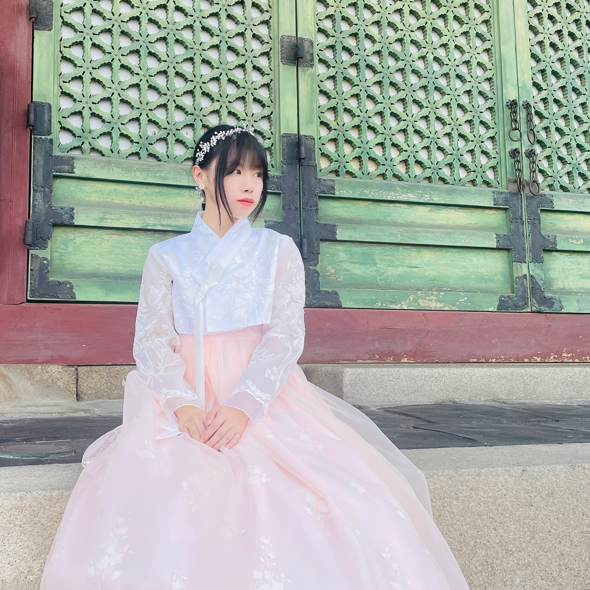
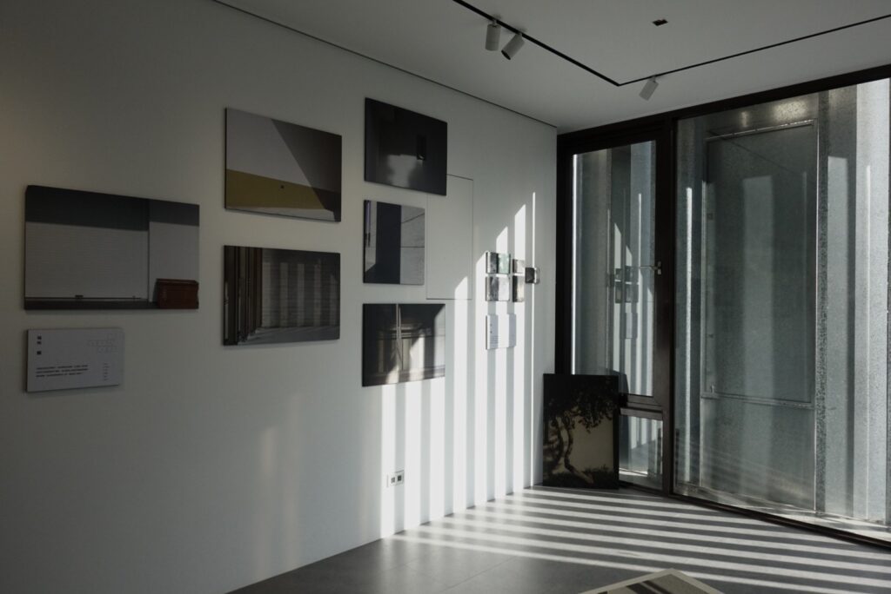
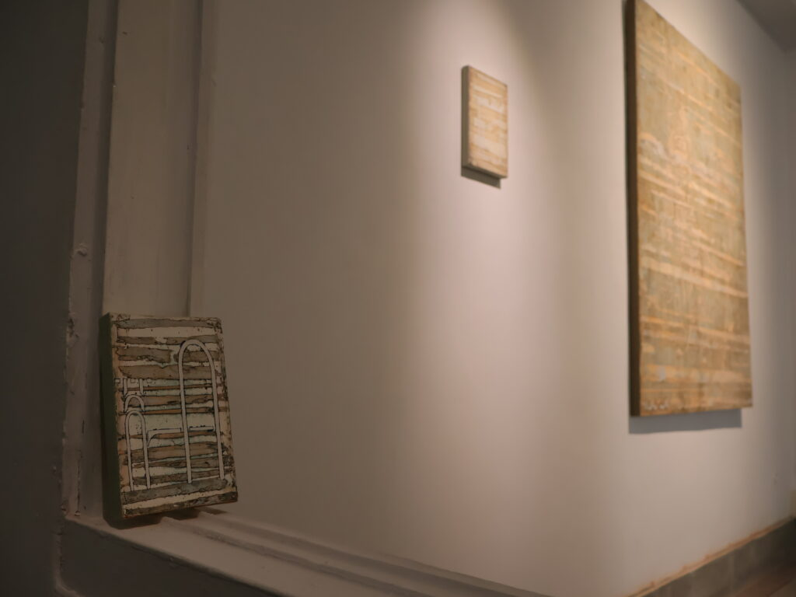
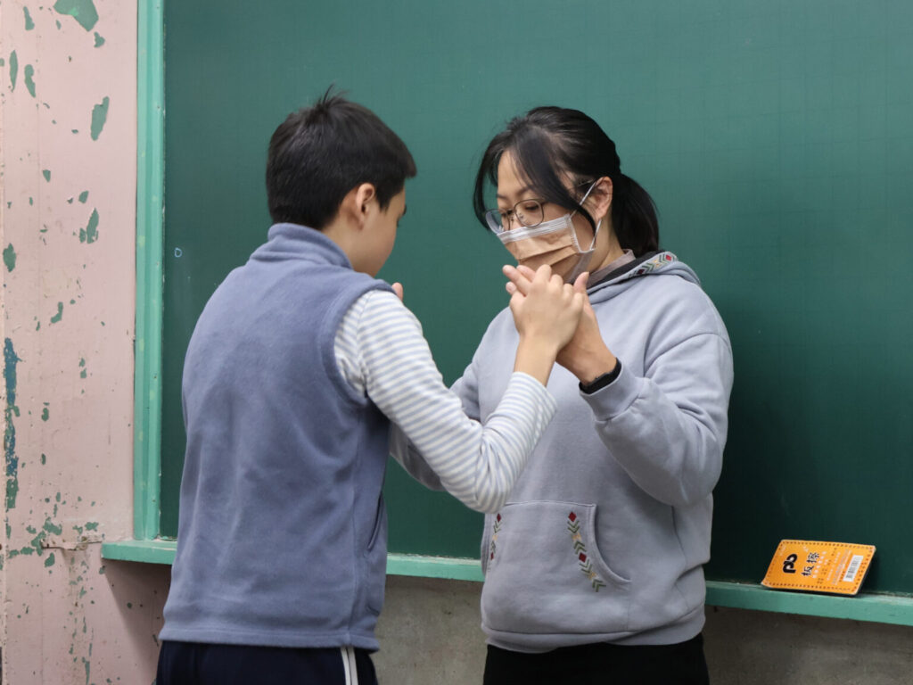
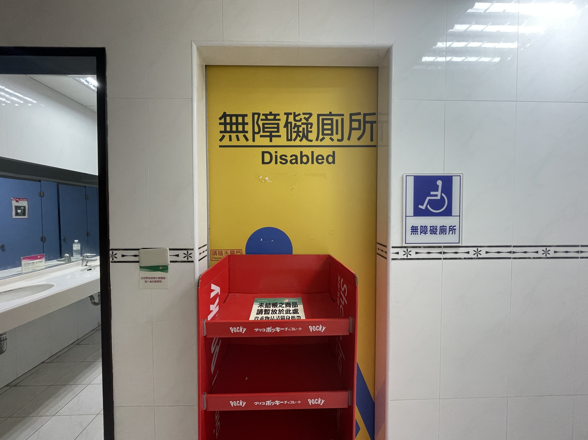
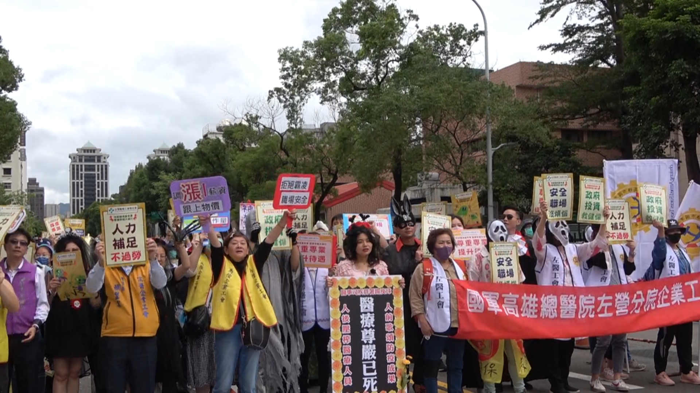
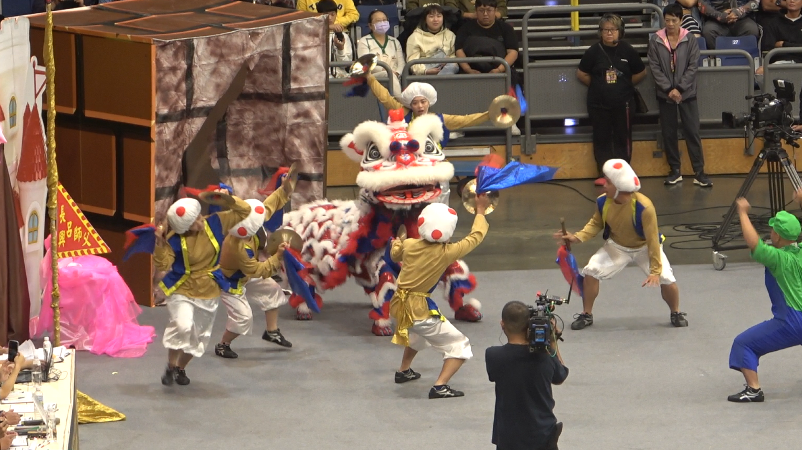

🎀
自我介紹
藝文新聞
文字專題
影音新聞

＃狐狸
#Waacking Girl
＃INFJ
＃工作狂
＃極繁主義
The Empress
女皇
The Hermit
隱者
The Magician
魔術師
我是王華琳，一個內斂執著的創作者，習慣在安靜中觀察世界，用文字整理思緒。喜歡獨處，也享受深入人心的對話。比起喧嚷，我更愛在靜謐中尋找靈感，將細膩感受化為故事。
The Magician
藝文新聞
《窒。游》 中求自由
許苑芸揭社會枷鎖下的渴望
「外在的束縛與對自己的期許，就像緊緊捆綁著我們，
其實不是那麼難解開，而是自己不願輕易地放過自己。」

李濡妘捕捉光影變化
藉影子觸及心靈深處
「陰影裡的黑去除干擾後，是觸及靈魂深處的關鍵。」

油彩侵蝕出隨機紋理
周鳳翔藉「痕跡」重現記憶碎片
「生命中充滿許多玻璃碎的記憶，總在不知不覺中影響著我們，
甚至在某一刻突然浮現腦海之中。」
The Hermit
文字專題

被忽略的校園守護者：
特教學生助理人員的職場困境
「特教助理員要協助不同障礙別的小朋友，應該是專業的職業，
不該將助理員視為臨時人力。」
輪椅旅遊困境
無障礙景點如何落實無障礙？
「台灣許多景點都有無障礙設施或服務，但輪椅使用者仍會碰到阻礙。」

用不了的無障礙設施
法規與觀念如何邁向下一步？
「部分政府機關不是沒有在做，
只是它做出來的無障礙環境並不符合使用者的實際需求，
就會變成花了錢，結果沒有實際效用。」
The Hermit
影音新聞

遊行抗議地獄職場
醫事人員上街爭勞權
「醫療前線人員惡劣的職場環境，政府若無法改善，
留不住舊人，新人也不願進入職場，
惡性循環之下，危害的依舊是廣大民眾的健康。」

《戲獅甲》舞進巨蛋
結合藝陣演繹台灣歷史
「兩年一次的戲獅甲系列活動，
不但建立平台讓本土與國際團隊相互交流，
更首度融合台灣歷史與民俗藝陣，期盼打破對傳統廟會的不良印象，
讓民眾看見舞獅文化的力與美。」
各校攻擊事件頻傳
遊蕩犬成校安隱憂
「遊蕩犬問題不僅造成校園安全隱憂，更可能危及自然生態，
如何在動物生存與學生權益間取得平衡，仍待政府與各界關注。」